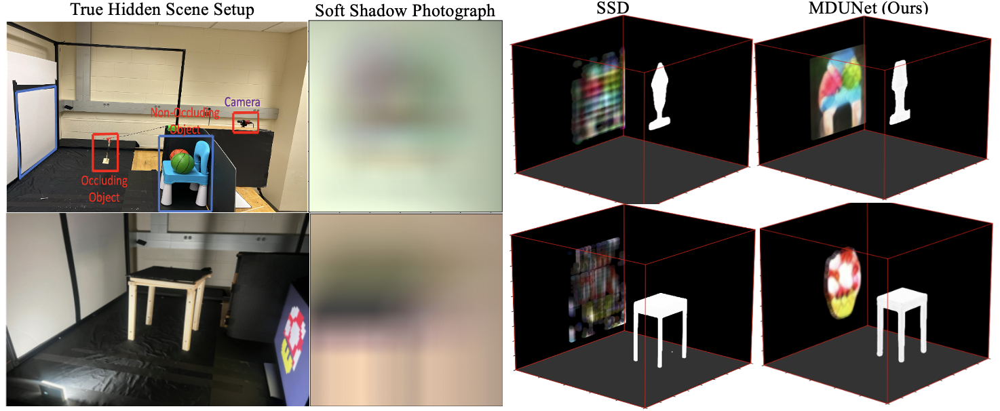
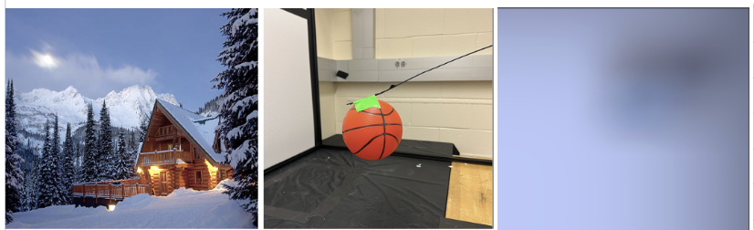
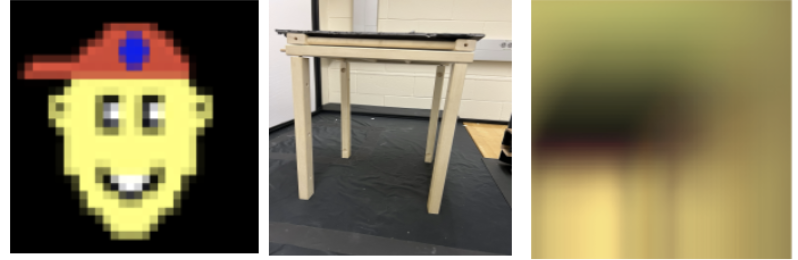
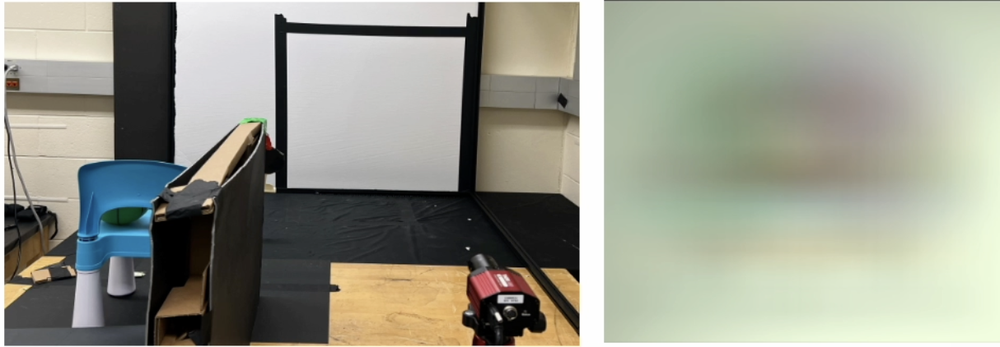
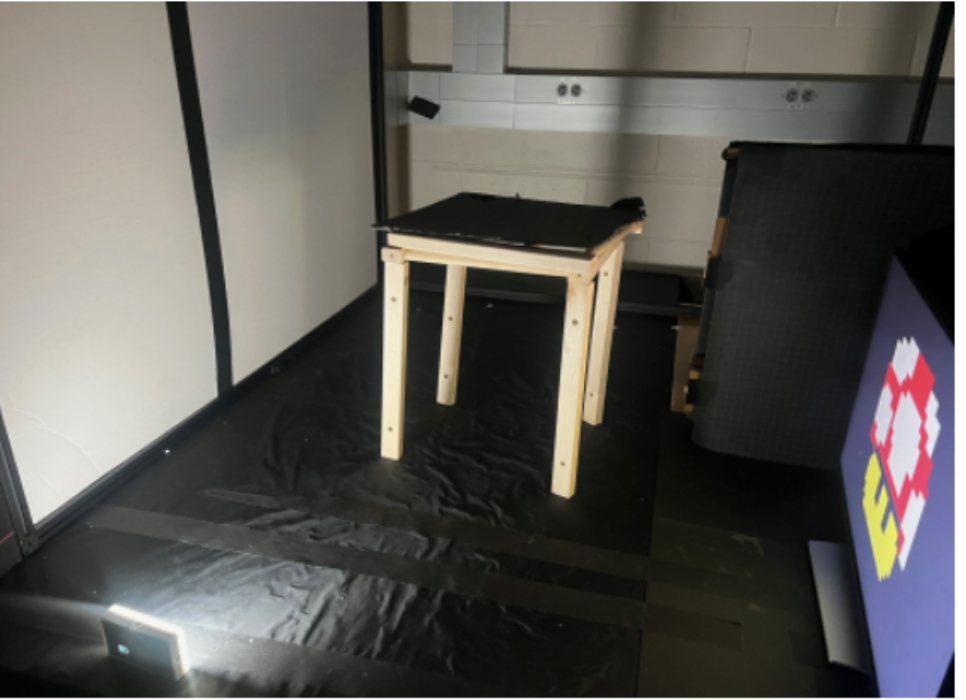
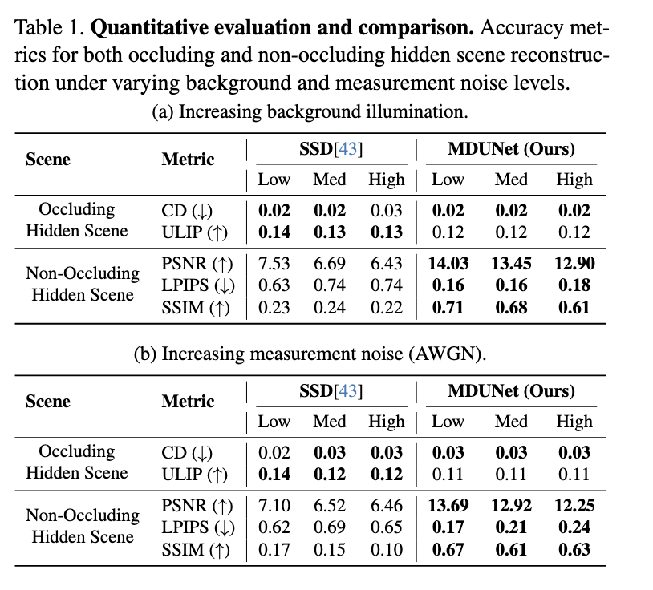
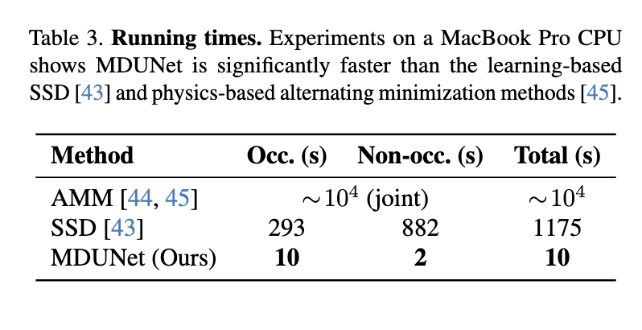

A conventional camera captures an image of a directly visible scene by measuring the light intensity (and color) arriving at each pixel of its image sensor from a corresponding scene patch. Accordingly, conventional photography treats the measured light as being solely informative of the directly visible scene. Recent research has shown that subtle variations in measured light intensity can carry information about scenes outside the camera's line of sight. A subset of these methods exploits preexisting obstructions—i.e., occluders—which cast barely perceptible yet highly informative soft shadows onto the observed planar surface. Whereas most prior works assume that exploitable occluders are either partly or wholly known or almost planar, a recent work blended a trained diffusion-based sampler to reconstruct the hidden occluding structures in 3D with a transverse 2D radiosity map of all other hidden non-occluding structures. This work proposes a fully trained novel multipath decoding UNet (MDUNet) architecture, in which the multimodal, multipath decoder parallels recent physics-based methods that achieve success by explicitly separating the representations and reconstructions of occluding and non-occluding hidden scene structures. However, by sharing a latent feature representation between the occluding and non-occluding structures, MDUNet couples their reconstruction pathways. Empirical results show that MDUNet improves inference times by over 100× compared to a state-of-the-art diffusion-based method and by 1000× compared to an iterative optimization-based method, while also improving reconstruction quality. In addition, MDUNet is trained solely on simulation data but generalizes to real experimental data, maintaining accuracy and stability even as ambient illumination increases. Code and training data are available at https://github.com/Predstan/MDUNet.






@inproceedings{mdunet2026,
title = {MDUNet: Multimodal Decoding UNet for Passive Occluder-Aided Non-line-of-sight 3D Imaging},
author = {Raji, Fadlullah and Murray-Bruce, John},
booktitle = {Proceedings of the IEEE/CVF Winter Conference on Applications of Computer Vision (WACV)},
year = {2026}
}